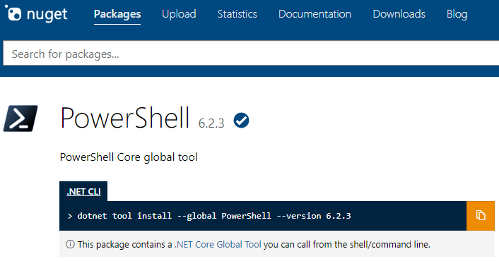

A pwsh parancs kiadásával ellenőrizzük, hogy a PowerShell telepítve
van-e már a számítógépre:
PowerShell not installed on Windows
A PowerShell önálló telepítése
A PowerShell utolsó stabil verziójának és legújabb előzetesének
(preview ) az általunk választott operációs rendszerre és
architektúrára előkészített önálló telepítő csomagját a
PowerShell GitHub oldaláról tölthetjük le.
A telepítést a választott platformnak megfelelő módon hajtsuk végre.
Segítségül ugyanezen az oldalon a telepítési útmutatókhoz vezető linkeket is
találunk.
Get PowerShell from GitHub
Windows operációs rendszeren a telepítő varázsló automatikusan felajánlja,
hogy a PowerShell indító könyvtárát felveszi a parancsfájlkereső utak
környezeti változójába (PATH). Ugyanitt érdemes a többi telepítési beállítást
is kijelölni.
Installation Options
A PowerShell telepítése csomagkezelő használatával
A PowerShell a .NET csomagkezelő rendszerében, a
NuGet-ben
is elérhető mint globális eszköz.

The PowerShell global tool in NuGet
A .NET Core SDK
előzetes telepítése után a PowerShell programcsomag valamennyi platformon
egységesen a dotnet tool install --global PowerShell
utasítással telepíthető a parancssorból. Ugyanezzel az utasítással ellenőrizhető,
hogy a PowerShell globális eszközként már telepítve van-e a számítógépen.
Global Tool Installation